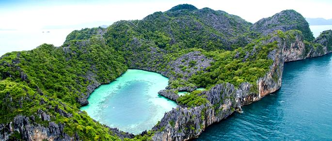
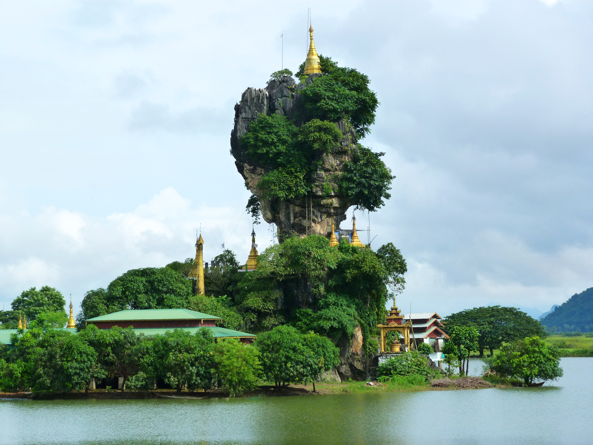

Natural-Landscapes in Myanmar
Mount Popa: Paradise For Hikers
If you’re in Mandalay, make it a point to visit Mount Popa. It’s one of the best Myanmar points of interest especially if you love to hike. The extinct volcano is not just magnificent to look at in itself but it’s topped by the Popa Taungkalat Monastery that’s perched on an outcrop. 777 steps will take you all the way to the top and reward you with panoramic views of the plains.
Climb to the top of a 1,518 m (4,981 ft) tall extinct volcano at Mt Popa, a scenic sacred volcanic mountain lying 50 km (31 mi) from Bagan. With over 200 springs and brooks, the mountain makes a great hiking area, its huge 1.6 km (0.9 mi) wide cauldron-like volcanic depression and debris landslide paying testament to the awe-inspiring power of nature. Considered the main abode of the most powerful spirits in Myanmar, the area also houses the country’s most important temples, which blend ancient folk religion with Buddhism. Perched on a huge volcanic plug, Taung Kalat Monastery--with its gilded stupas--offers spectacular panorama, which you will reach after a steep climb of 700 steps. Bring food and water along if you want to conquer the peak, and beware of the thieving macaque monkeys. Using our custom trip planner, Popa attractions like Mt Popa can form part of a personalized travel itinerary.
Mergui: Sail Around The Place
Mergui (or Myeik) Archipelago lies off the far south coast of Myanmar (formerly Burma). It's comprised of hundreds of islands that have coral reefs and beaches. Lampi Island, in Lampi Marine National Park, is home to the seafaring indigenous Moken people. It's a haven for birds, notably the plain-pouched hornbill, plus marine life like dugongs and turtles. Myeik, a port town, is a gateway to islands close to shore.The Mergui Archipelago is known around the globe with its pool of the destinations it showcases. Some of its scattered parts around in the Andaman Islands are often regarded as the Myeik Archipelago and the Pashu Islands. Each one of these places has a unique character of its own which is what sets it apart from the others. The beautiful sand that glistens under the direct rays of the sun further adds to the beauty of the place. Not just a relaxing day in there but even a good chunk of the activities around in here include that of the amazing sailing expeditions. More and more people are relegating to the yachts to have an even better time on this piece of land.
Kyauk Ka Lat Pagoda: Admire The Lush Greenery
The Kyauk Ka Lat Pagoda is a Buddhist temple in the Kayin State, Myanmar. The temple complex is built onto prominent limestone rock formation surrounded by an artificial lake, and houses an active community of monks.

The complex at Kyauk Kalat contains a number of structures, shrines, and temples set on a limestone rock formation. The temple is located several miles away from the city of Hpa-An, and is in close proximity to a number of other Buddhist sites.[1] The temple complex is a functional monastery, and is open for tours.The limestone tower of the Kyauk Ka Lat Pagoda is what leaves every single one of the tourists speechless and in awe. Apart from the Pagoda itself, you also get to experience the beauty of the lush greenery surrounding the place which further adds to the beauty even further.